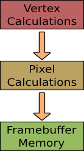

Research School of Engineering
ENGN8537: Embedded Systems and Real Time Digital Signal Processing
I had the video game company take your
Alternative Processors:
Graphics Processing Units
away because I love you.
It's like the time you took away the credit card from me when I was ordering all those porcelain babies.

We have seen SIMD architectures that allow multiple pieces of data to be processed simply with one instruction. We have then seen Stream processors that allow one piece of data to be processed with several instructions in turn. Putting this all together, we get a processor that can perform multiple instructions on multiple data at once.
The canonical example of where this is useful is in graphics processing: The operations will be rendering, shading, texturing; across lots of vertex, triangle, image or pixel data.
"6600GT GPU" by Berkut - Own work. Licensed under Creative Commons Attribution-Share Alike 3.0 via Wikimedia Commons - http://commons.wikimedia.org/wiki/File:6600GT_GPU.jpg#mediaviewer/File:6600GT_GPU.jpg

Originally GPUs didn’t have much to do: Turn vertices in to visible triangles, turn triangles in to pixels. Each of these used its own specialised hardware
As things evolved, more hardware was added to put textures on triangles, filtering and anti-aliasing. Pixel operations were extended to simplify reflections, shadows.
Geometry Heavy
Pixel Heavy
It was observed that with this complex sequence of operations, it wasn’t likely that all the hardware modules would be used equally. As such, hardware was often sitting idle, wasted.
GPU
Specialised hardware has been replaced with more generic hardware, able to be reconfigured to perform whatever types of graphical operations are required. The following example is from a modern NVidia card and uses their terminology, but the concepts are equally applicable to other brands.
Contains
- Memory Interfaces
- CPU Interfaces
- Workload Distribution
- Lots of Stream Multiprocessors
Stream Multiprocessors
Contain:
- Stream Processor cores
- Special Function Units
- Caches
- Memory
- Double-precision hardware
- Multi-Instruction Issue
A Stream Multiprocessor (SM) here is roughly equivalent to a Stream Processor from the previous lectures in that it can perform a sequence of operations on incoming data. Modern SMs are more powerful than the stream concept before as they aren’t strictly linear, they may throw away data chunks halfway through, perform conditional operations, split and merge streams internally etc. In terms of graphical operations, these may be things like only rendering pixels that are actually visible.
An SM contains Stream Processors (SPs) which are more limited than the previous definition - each one can perform only a single operation.
Multithreaded Issue
Scheduler for multiple threads. Ensures high SM/SP utilization.
Acts as a scheduler, allowing multiple threads to be ready to run on an SM; each one getting a turn in a defined order (e.g. round-robin). A new thread may run if an old one has completed or if it is blocked (e.g. waiting for memory).
Analogous to running multiple programs on your PC at once.
Stream Processor
Contains an ALU and a Floating Point Unit. Can be wired to other SP, SFU, DP etc to form Kernel.
Don't get confused between nVidia's defintion of Stream Processor and our definition from the previous lecture.
Special Function Unit
Performs particular operations such as Square Root, Logarithm.
SFU Operations are expensive enough to warrant their own acceleration (as opposed to being implemented as a sequence of other operations). They are not, however common enough to warrant being added to every SP.
These operations include Square Root, Logarithm, Trig operations etc.
Double-Precision Unit
All other calculations done in Single Precision.
For pixel operations, this is more than enough. For scientific computer applications of GPUs it can be a problem.
Similar To:
Superscalar
Can execute multiple different instructions at once, e.g. down different SM blocks
Vector
Can apply the same operation to different sets of data at once
Stream Processing
Can apply a sequence of operations to the same data, not just a single instruction
Superscalar processors can typically only execute two or so instructions in parallel, a GPU can execute hundreds or thousands, so it isn't a completely fair comparison.
When performing a Vector calculation on a GPU, it may be split back in to scalar components and each scalar given its own SP, but the outcome is the same: A single operation applied to multiple data at the same time.
Superscalar processors can execute two instructions per clock but full utilization was unlikely due to data and hardware dependencies.
GPUs can run thousands of instructions per clock; how do they get good utilization?
Stream
Algorithm must be free of data dependencies between instances of the same kernel.
e.g. If your algorithm runs across a set of pixels, the most efficient algorithm must not include dependencies between pixels; it must be able to be executed on every pixel, or set of pixels, independently.
Sometimes such dependencies are impossible to avoid (e.g. Sum of Absolute Differences); these kernels explicitly merge previous streams and as such absolutely must be executed after the previous kernels, not in parallel.
SIMD
The programmer must write simple kernels (functions) that apply in the same way to each piece of data.
Moreover, the kernels are likely to use Vector operations internally.
Once the kernels are defined, the GPU will manage the parallel execution of a number of instances. If the programmer had to manage the set up and teardown of each kernel for each piece of data, the system would rapidly become too complex.
Fragments
Diffuse Shader
Changes surface brightness depending on angle to light source.
Texture2D<Float3> myTex;
Float3 lightDir;
Float4 diffuseShader(Float3 norm, Float2 uv) {
Float3 kd;
kd = myTex.Sample(uv); // Get texture colour
kd *= Dot(lightDir, norm); // scale by angle
return Float4(kd, 1.0); // add 100% opacity
}
A thread that satisfies these conditions and, as such, can be run on a GPU, is called a fragment. Here’s a
shader fragment that computes “diffuse reflectance”.
It gets the colour of the texture at the location then makes it brighter or darker based upon the relative angle of the surface and the light source.
Stream?
Each instance is independent.
Yes.
The only data accessible to all instances of this fragment are the texture and light direction. These are read-only in the fragment so there are no dependencies between the instances.
SIMD?
Same code runs on all pixels. Uses Vector instructions internally.
Yes.
The fragment applies to any given pixel by design. Further, it uses vector operations internally such as the dot product between two vectors (multiply-and-accumulate operation) and the multiplication of the kd vector by the scalar dot-product result.
Performance
In order to use a GPU for your problem, it must follow the two rules laid out previously. That is, it must
be able to be decomposed in to relatively few sets of instructions, each of which can be executed unchanged across multiple data. Further, each of these sets of instructions must be able to run independently of each other when run on different data. This is a fairly restrictive requirement and may make the decision for you.
Then the decision comes down to the data set. The data set must be large enough that the speed up of the GPU outweighs the cost of initializing the GPU and transferring the data back and forward.
The throughput of GPUs is now at least an order of magnitude above that of a CPU, so that break-even point is getting ever-easier to reach. This graph is taken from some relatively old NVidia marketing material but illustrates the point.
Integration
Why don't CPUs include heavily-parallel processing pipelines like GPUs?: Memory Latency.
Masked by Caches: CPUs use Caches to store small data sets, quickly providing data to the executing thread.
Masked by Threading: GPUs use parallel hardware and software to simply run something else.
Why don't CPUs include heavily-parallel processing pipelines like GPUs, if it's such a good idea?
Caching doesn't work well for large data sets such as those used in GPU processing. Running a very large number of threads doesn't work for general use CPUs as the chances of dependencies are too high. As such, each type of device has specific requirements around cache.
Remember that cache was the most significant contributor to CPU die size (and therefore cost). Putting GPU-style processing on the chip as well would be too expensive.
That said, more hybrid chips are coming out that contain both CPU and GPU devices; logically separate but on the same die.